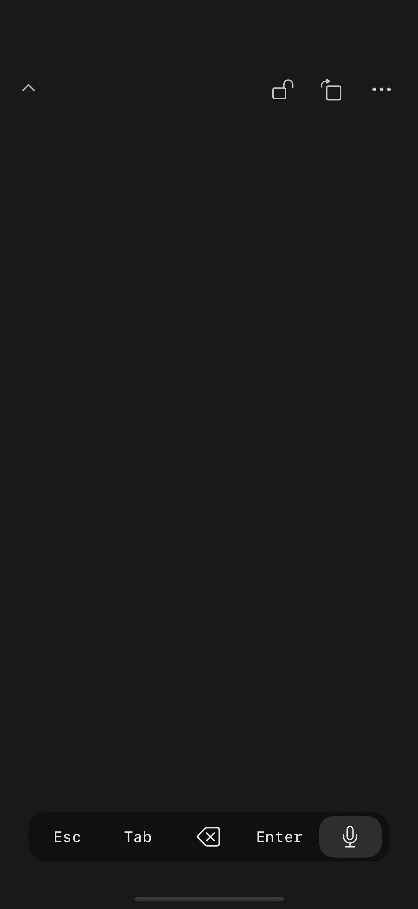
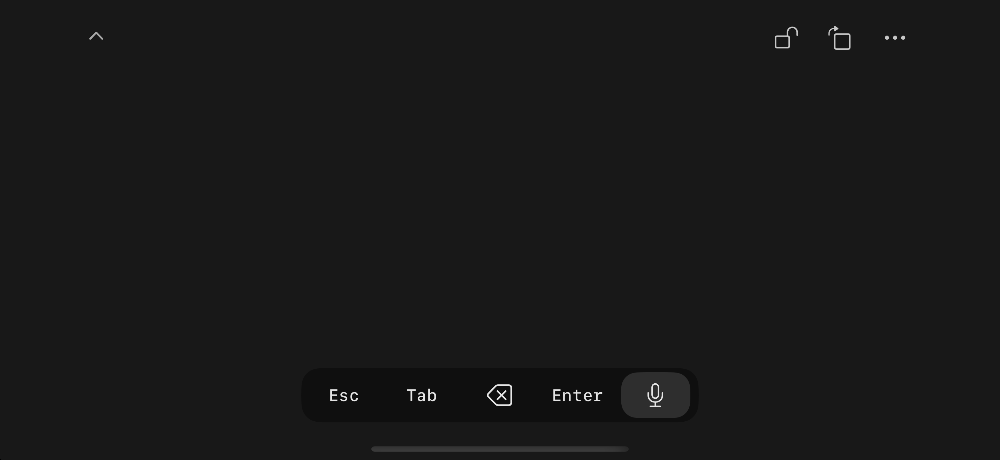
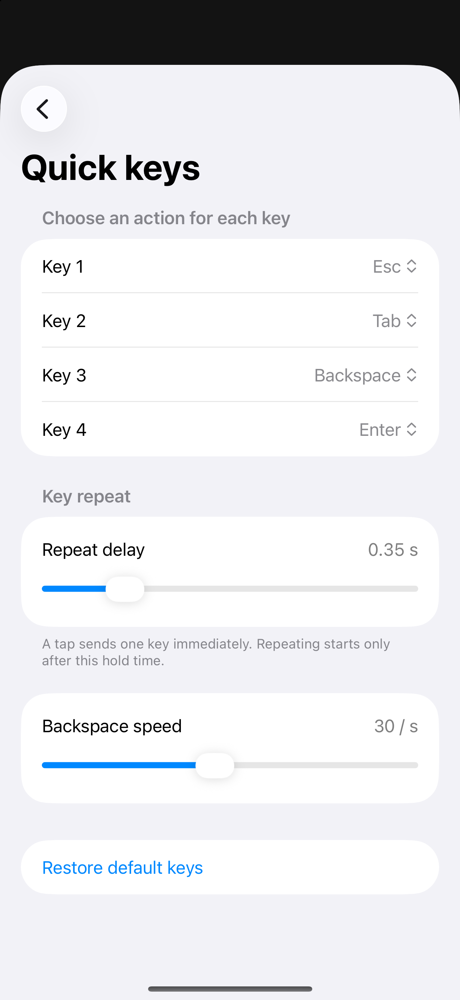

FOR iPHONE + MAC
A little closer
to your Mac.
Mac과 더 가까이.
손끝 하나로.
Your iPhone becomes a trackpad.
And a little more.
Free. Wi-Fi or Bluetooth. Just your devices.

Less to look at.
More to work with.
화면은 간결하게.
할 수 있는 일은 다양하게.
A spacious touch surface. Familiar gestures. Four keys you choose.
Made to keep your hands moving and your attention where it belongs.
MOVE NATURALLY
It starts
at your fingertips.
손끝에서
자연스럽게.
Point, scroll, pinch, and switch spaces.
Turn individual gestures on or off in settings.
Two fingers. Scroll with momentum.
Pinch to zoom in compatible Mac apps.
Three fingers. A different point of view.
Room to make your move.
움직일 공간을 더 넓게.
Portrait or landscape. Open the controls, or fold them away.
The surface stays yours.

SMALL CONTROLS. BIG POSSIBILITIES.
Your keys.
Your voice.
Your flow.
내 키.
내 목소리.
나만의 흐름.
Choose what each of the four keys does. Tap once, or hold to repeat. Fine-tune the delay and Backspace speed.
Use your iPhone as an optional Mac microphone, with dictation controls for compatible ChatGPT/Codex and Claude desktop apps.
Microphone driver setup and compatible app required. Voice processing follows the receiving app’s policies.

TWO APPS. ONE SIMPLE CONNECTION.
Together is better.
함께 쓰면, 더 간편하게.
- 01
Install both apps.
두 앱을 설치하세요.
Get the iPhone app and the free Mac companion.
- 02
Scan. Connect.
스캔하고 연결하세요.
Allow Mac Accessibility, then scan the Mac QR code.
- 03
Make your move.
이제 움직여보세요.
Use same-network Wi-Fi or nearby Bluetooth.
Direct between your devices. No PocketTrackpad account. No ads. No input relay server.
Your Mac.
Within reach.
손안에서 만나는
나의 Mac.
Start with the iPhone app and its free Mac companion.